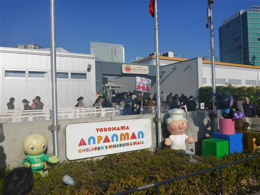
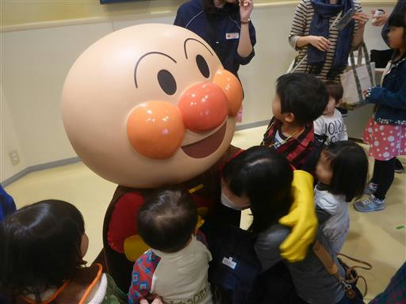
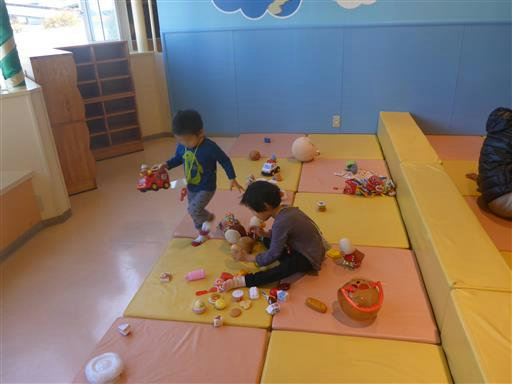
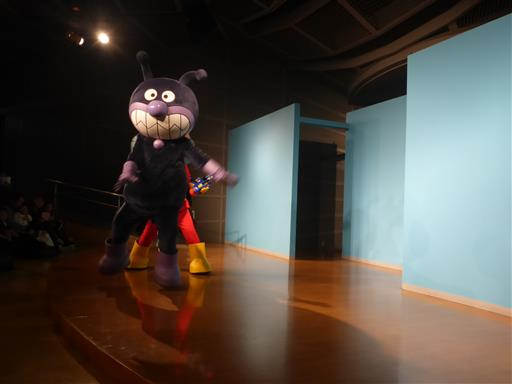
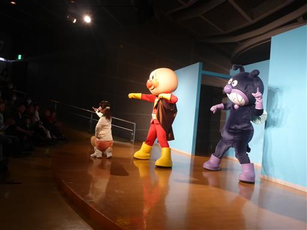
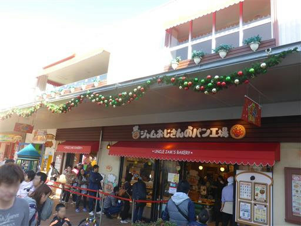
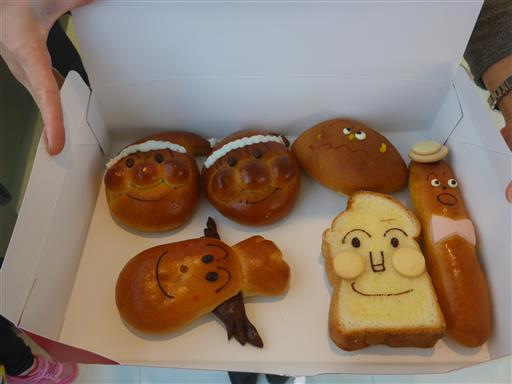
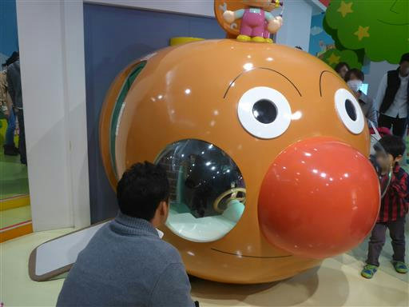
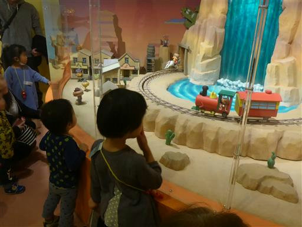
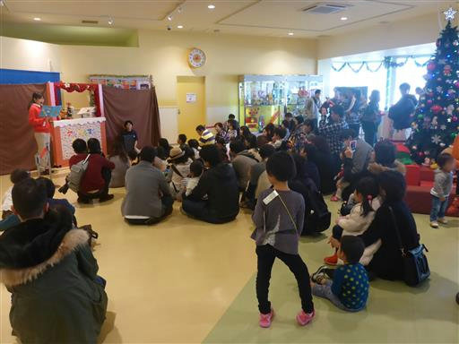

アンパンマンミュージアム
| 日付 | 2015年12月12日（土） |
|---|---|
| メンバー | 家族（妻、長女・4歳、長男・2歳） |
| アクセス | 電車 |
子供がアンパンマンミュージアムに行きたいと言い出したため、行ってみることにする。
場所は横浜市。日本各地にあるのだが横浜にあるのが一番大きい。
駅からは結構遠く不便な場所にある。
移動途中で娘がぐずったため、予定より10分程度遅れて到着。
開始時刻直前になってしまったため、10分程度列に並ぶことになる。
料金は1500円/人で、4人で行くと結構高い。

本物（？）のアンパンマンと触れ合える。

子供たちはおもちゃコーナーで遊び出す。
おもちゃで遊ぶなら、わざわざここに来る必要はないのだが…

アンパンマンショーを見に行く。
最初にばいきんまんが出てきたため、娘は心底怖がっていた…

アンパンマンが出てきて少し落ち着きを取り戻す。
劇というより、一緒に遊ぼう、という感じのショーだった。

昼食はジャムおじさんのパン工場でパンを買う。

アンパンマンを始めとしてどれも可愛らしいパンだ。
310円/個とこれも少し高めだ。

アンパンマン号。他にもバイキンUFOやSLマンなど、いろいろある。
基本的には子供が中に入って、親が写真を撮って、他の子供と交代、という流れになっている…

アンパンマンの世界を再現したジオラマ。

人形劇もやっている。
施設が狭くて混み合っていたが、子供たちはそれなりに満足したようだった。
